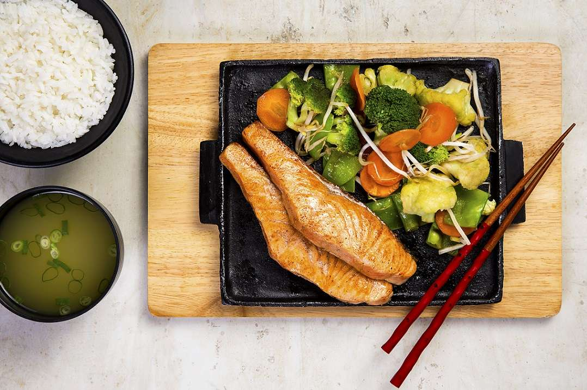

Aussie Cheese Fries: Fritas com uma cobertura irresistível com mix de queijos e bacon. O toque final fica por conta do molho Ranch.
Teppan de Salmão: Salmão grelhado acompanhado com arroz, missoshiru e legumes no vapor.

Chocolate Thunder From Down Under: Brownie exclusivo e quentinho com sorvete de baunilha e deliciosa calda de chocolate preparada diariamente no Outback. Finalizado com chantilly e raspas de chocolate.

Super Wings: São 15 sobreasas de frango servidas com o molho Blue Cheese (contém açúcar e lactose) e aipo.

Chicken Pasta Primavera: Fettuccine tradicional com legumes e tiras de frango grelhado, refogado com um cremoso molho Alfredo e coberto com queijo parmesão